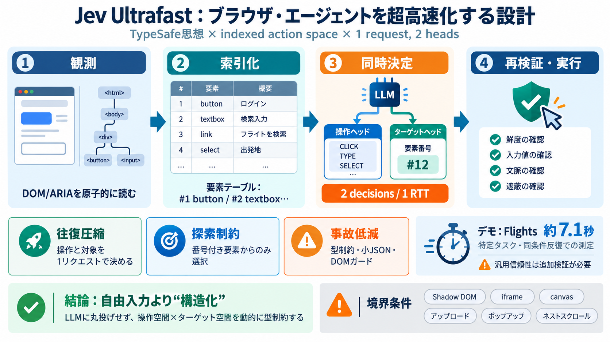

Web Bench: Compare AI Browser Agents (Updated June 2026)
On the other hand, agent performance for read heavy tasks (e.g. extracting information out of websites) was better than …

ブラウザ上の要素を観測し、LLMが「実行できる操作」と「対応するターゲット」を型制約つきで選ぶことで、意思決定を超高速化する設計です。
主要アイデア：indexed action space（要素テーブル）＋1 request, 2 heads（操作/ターゲット同時分岐）＋DOMベースのガード。
ブラウザ・エージェントは、観測→推論→次操作までの往復がレイテンシになりやすく、特に「操作と対象の決定」を分けると遅くなります。
目の前のUIを“地図”に変換し、LLMは番号付きの地図から行動を選ぶことで、無効なクリックを避けながら高速に進めます（要素テーブル）。
日英：indexed action space（番号付き行動空間）/ 要素テーブル（element table）
同じ観測状態を共有して、操作ヘッドとターゲットヘッドを同時に出力することで「2 decisions, one network round trip」を実現します。
観測のたびに、ボタン/コンボボックス/テキストボックス等を抽出して番号付き一覧（indexed action space）を作り、LLMはその範囲でのみ操作を提案できます。
日英：target space（対象空間）/ element type（要素型）
Google Flightsで「チューリッヒ→ロンドン（片道、2026/9/20、成人1名、エコノミー）」を自然言語ゴールから探索し、約7.1秒で到達したと記載されています。
注意：これは汎用信頼性の統計ではなく、境界条件がある測定です。
既定のループではスクリーンショットを基本的に使わず、DOMを原子的に読み取って意思決定します。選択したターゲットは文書状態・入力値・近傍文脈・クリック遮蔽も再検証します。
テキスト生成は“小LLM”に限定され、TYPE_TEXTのときだけ書き込みテキストを生成します。生成物はパース可能な小JSONとして扱われ、型要件に合うものだけ実行されます。
日英：JSON schema（JSONスキーマ）/ typed execution（型付き実行）
ultrafastは単なる強いLLMではなく、(i)操作/対象の同時決定、(ii)要素テーブルで探索を制限、(iii)DOM中心＋再検証で余計なやり直しを減らす設計の合成です。
エージェントは観測状態から要素テーブルを作り、操作とターゲットを同時に決め、実行前後で鮮度と整合性を確認しながら進みます。
DONEは「達成したはず」という宣言であり、内部推定だけでは誤りがあり得ます。READMEではDONE後も独立したアウトカム検証が必要とされています。
MVPの限界として Shadow DOM、iframe、canvas、アップロード、ポップアップタブ、ネストスクロール、任意キーボードウィジェット、完全なアクセシブルネーム仕様などが未対応（またはMVP外）とされています。
日英：limitation（制約）/ unsupported（未対応）
このリポジトリは、LLMに画面操作を丸投げするのではなく、観測された要素テーブルで操作を型制約し、ネットワーク往復と誤操作を削る実装思想が核です。
本デッキは、GitHubリポジトリ jev-ultrafastのREADME本文および掲載情報に基づく要約です（ユーザ提示の本文要約を含む）。
注意：具体URLの提示は本文に含まれていないため、ここでは「README文脈要約」として記載しています。
On the other hand, agent performance for read heavy tasks (e.g. extracting information out of websites) was better than …
| Model / Agent stack | Success rate (overall) | Median duration (s) | Notes | --- --- | | ModelA + FrameworkX | 82% |…
That’s the bet. Code-mode framing, CDP under the hood, scan-then-script flow, no MCP layer in between. ## The honest ve…
CLI-first design - Every browser action is a single CLI command. Chain them together in any language or framework Acces…
You can safely connect your credit card and purchase things with hosted browser agents.### How we Made Scalable Long-Hor…